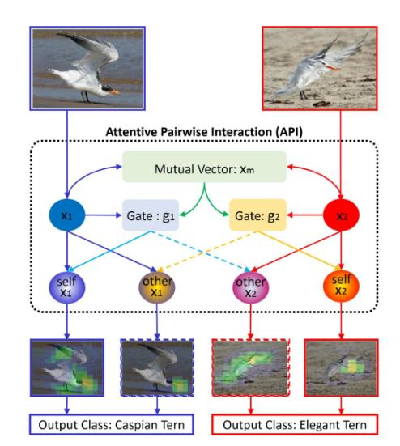
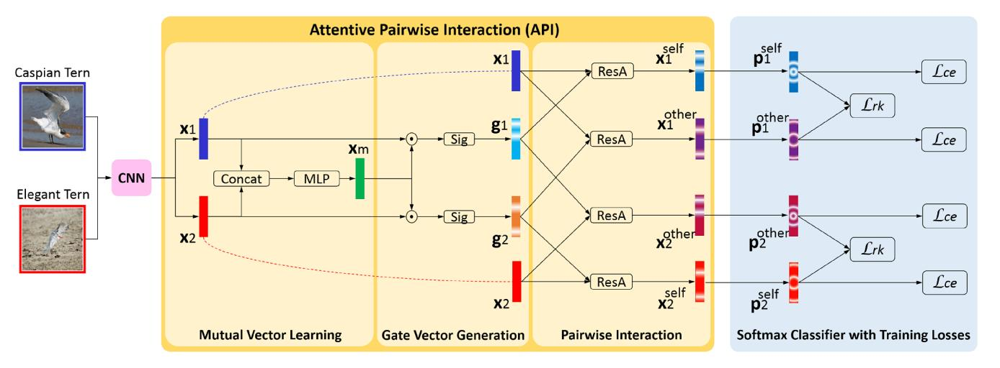
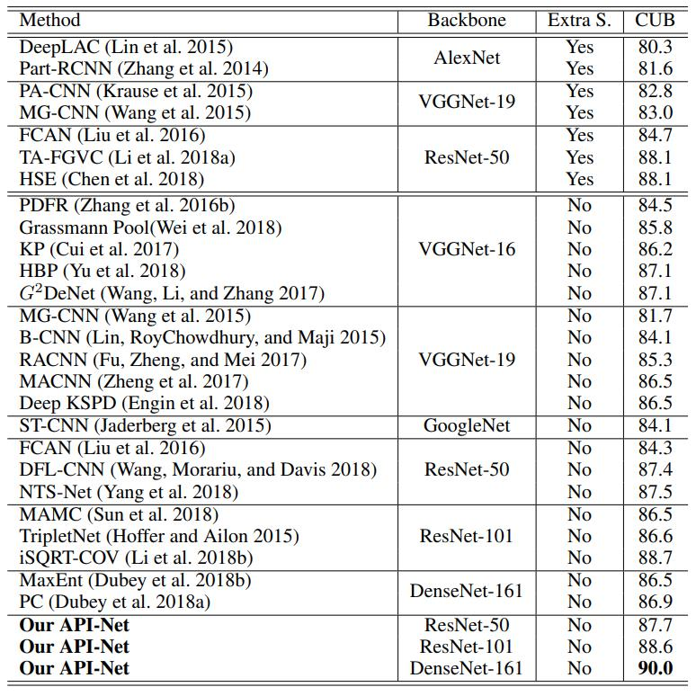
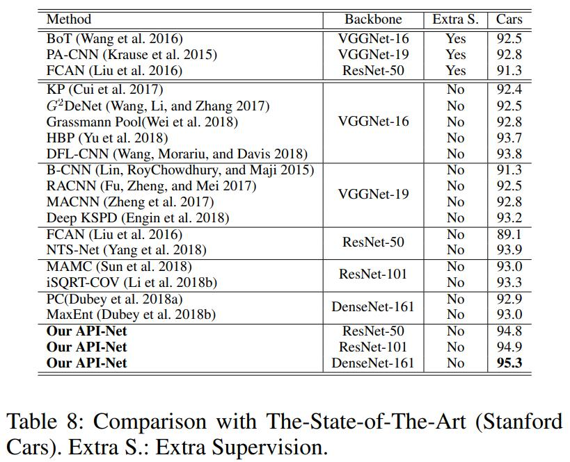
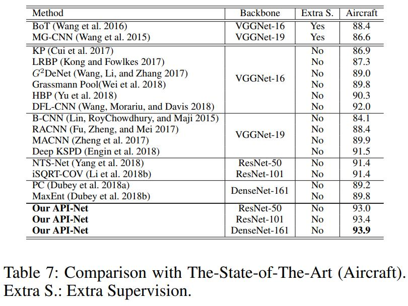

细粒度：API-Net¶
综述¶
会议时间：American Association for Artificial Intelligence 2020 (AAAI, 2020)
论文地址：https://arxiv.org/pdf/2002.10191v1.pdf
源码地址(PyTorch版本)：https://github.com/PeiqinZhuang/API-Net
针对领域：细粒度图像分类(FGVC)
主要思想¶
以往的细粒度分类算法往往是通过学习单个输入图像的微小特征来实现的，但单张图片所蕴含的种类信息有限，并且难以挖掘里面的精细特征。相反，人们常常通过比较两张图像，来学习里面的细微差异，比如下图中的红嘴巨鸥和丽色凤头燕鸥属于两种高度相似的鸟类，如果仅检查单个图像，则很难辨识它属于哪一类，如果我们将这两张图片放在一起，通过对比观察图像中的细微差异，可以进一步理解每一张图片所蕴含的特征信息。例如，鸟的身体是左图像的重要部分，而鸟的嘴部是右图像的关键特征。在这种有区别性的引导下，我们对鸟的身体和嘴部给予了不同程度的关注。注意，对于每只鸟，我们不仅要检查它的突出部分，还要看一看与另一只鸟不同的部位。通过这种对比，可以告诉我们红嘴巨鸥身体更胖，丽色凤头燕鸥嘴更弯。

受上述思想的启发，作者设计了用于细粒度分类的成对交互网络(API-Net)，它可以自适应地从一对细粒度图像中发现对比线索，并且通过成对交互模型区分它们。具体地说，API-Net可以像人一样，通过比较两幅相似的细粒度图像来学习里面的特征差异，该网络主要由三个模块组成，即相互向量(mutual vector)学习模块、门向量生成模块和成对交互模块。通过将一对原始图像作为输入，API首先学习得到一个相互向量，得到输入图像对的对比线索。然后将相互向量与单个向量做比较，得到不同的门向量，可以有效地从每个单独的图像角度来突出语义差异。之后，API应用这些门得到区分注意力，最后传入成对交互模块进行交互学习，在这种情况下，每个图像可以生成两个增强的特征向量，这两个向量分别从它自己的门向量和另一个图的门向量中激活，并且每个增强后的特征向量都可以得到一个预测结果。最后，根据每个增强特征向量的预测结果来优化网络整体的参数，进一步提高网络区分这些特征的能力。另外，值得一提的是，该API模块可以很容易地嵌入到任何CNN网络中进行细粒度分类，并且在测试过程中可以在不损失泛化能力的前提下，将该模块卸载下来以提高测试精度。
网络结构¶
网络主要由三个模块构成：相互向量学习模块、门向量生成模块和成对交互模块，网络整体框架如下图：

首先，API从单个图片x_1和x_2学习得到一个相互向量xm，该向量可以总结成对的对比线索。然后，API进一步将x_m和x_1、x_2做比较，生成两个不同的门向量g_1、g_2，这些门允许API分别从单独的图像中发现不同的视觉线索。之后，API在门向量的指导下分别对两个向量x_1、x_2执行成对交互操作，最后通过交叉熵损失和排序损失来优化网络整体的参数。注意：API是一个实用的即插即用模块，在训练时可以将API与CNN结合，测试过程中可以将其卸载，只保留CNN，并且不损失精度。
相互向量的学习
首先，将两个细粒度图像传入同一个特征提取网络中提取特征，得到特征向量x_1、x_2，之后再将两个特征向量进行堆叠，传入预先构建好的MLP中，得到相互向量：
门向量的生成
在学习了相互向量之后，为了进一步分别从每个个体图像的角度生成不同的线索，以便后续区分这对图像，作者又将相互向量x_m分别与x_1、x_2做比较。具体的来说，作者让x_m与xi在通道维度上做点积，利用x_m来指导发现单独的xi中哪些通道具有对比线索。然后，添加一个sigmoid函数(该函数具有归一化的功能)来生成门向量g_i：
成对交互模块
为了捕捉一对精细图像的细微差异，人们不仅需要检查每幅图像的突出部分(对应self)，还要检查与另一幅图像不同的部分(对应other)。受上述思想的启发，作者通过残差注意力引入了一种交互机制：
训练与测试¶
训练过程¶
得到四个注意特征(attentive features)之后，再分别将其传入分类器(fc)和softmax层：
损失函数¶
为了有效地训练API-Net，作者为图像对设计了如下的损失：
排序正则化损失
图像配对¶
首先，在一个batch中，随机抽取N_{cl}个类别，对于每个类，再随机抽取N_{im}个图像样本(数据具体的采样实现过程可见源码笔记)。然后作者再将这些图像传入主干特征提取网络中生成特征向量。对于每幅图像，作者利用欧氏距离将其特征向量与该批次中其他的图像进行比较，距离越小，代表两组特征越相近，即两幅图像越相似。因此，对于每幅图像X，可以找出两幅相似的图像分别构造两对图像，即X与该批次中属于同一类的相似图像(类内相似)、X与该批次中属于不同类的相似图像(类间相似)。因此，每个批次中有2\times N_{cl}\times N_{im}对图像，最后将其均传递到API-Net中，并且总结所有图像对的损失来实现端到端的训练。
测试¶
API是一个用于细粒度分类的即插即用模块。在训练阶段可以从一对图像中总结对比线索，进一步逐渐概括CNN对每个单独图像的辨识能力。因此，在测试阶段，可以将API模型卸载，并且不会有太大的泛化损失。具体的来说，我们只需要将测试图像输入到CNN主干特征提取网络中提取特征，然后将得到的特征图直接传入分类器进行分类，最后得到分类结果。本文测试方法与普通的CNN网络完全相同，因此极大地提升了API-Net对细粒度分类的价值。
精度对比¶
CUB-200-2011

Stanford Cars

Aircraft

总结¶
本文算法的提出始终围绕着一个核心的思想：通过联合比较一对图像来区分相似物体之间的细微差异，可以更好地提升模型对物体精细特征的表示能力。作者依据上述思想提出了一种用于细粒度分类的成对交互网络(API-Net)，他可以自适应地从一对图像中发现对比线索，并且通过成对交互模块来区分它们。
注：以上仅是笔者的个人观点，若有错误，欢迎大家批评指正。
最后一次修改日期：2021年11月25日